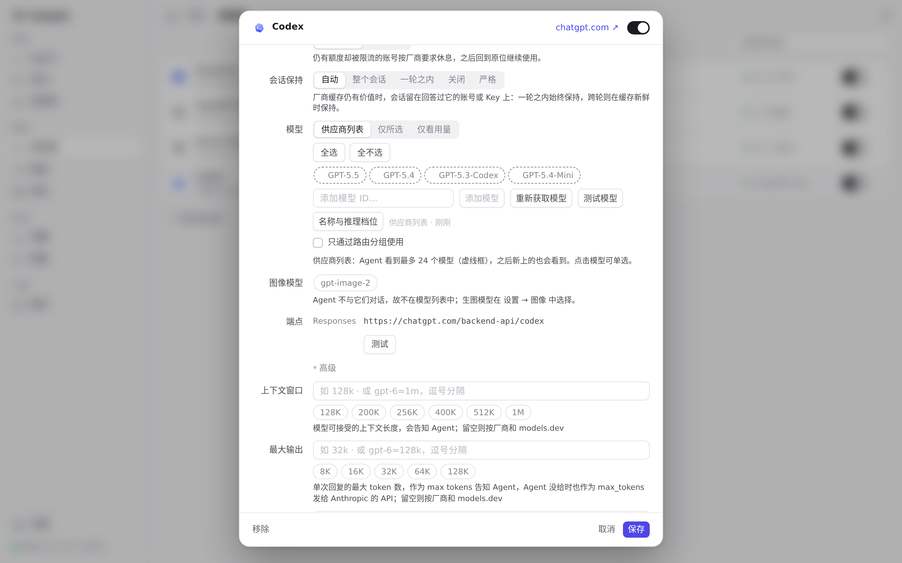
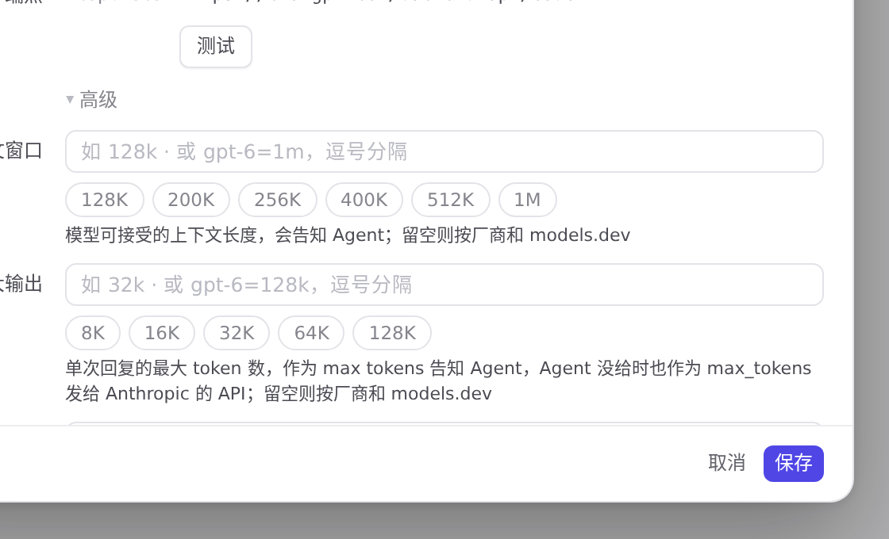

#1 界面预览
commit fd0cfc0 · 回到 PR · 此 PR 只改了一处界面文案：供应商编辑页里「Codex 在此服务商上原生压缩」开关下的说明，改成「官方 Codex 账号可切换到账号池中其他符合条件的账号继续、检查点原样传递且不丢弃」的新表述，并同步了简体中文、繁体中文、日文和德文翻译。网关侧的检查点跨账号续接、错误提示等属于后端行为，没有新增页面或控件。
红线是鼠标走过的轨迹，红色圆环是一次点击；底部文字是这一步在做什么。空格暂停，← → 逐段查看。

Codex 原生压缩的说明文字 · 「压缩」开关下方的说明文字

Codex 原生压缩的说明文字 · 「Codex 在此服务商上原生压缩」开关与说明